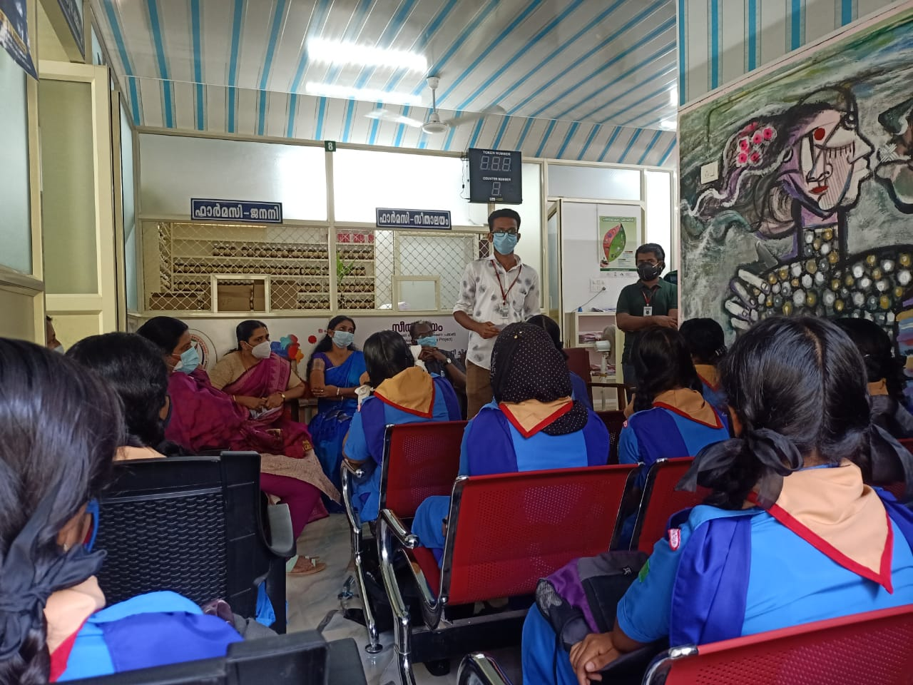

Abstract
IEEE Student Branch College of Engineering Chengannur
College of Engineering, Chengannur (CEC) has always been a very active node of IEEE. The Student Branch has seen a continuous rise in participation and activities over the years. It has gained widespread fame for the founding of IEEE LINK (Local Integrated Network of Kerala), which continues contributing to IEEE Student Branches in Kerala to this day. Moreover, the Student Branch has maintained its rate of growth throughout all these years since its establishment in 1996, three years after the establishment of the college. Since then, the student branch has been ardent in pursuing its mission to deliver graduate and undergraduate students under any engineering stream with opportunities for their technical and professional development. Through the years, the branch has come a long way and has consolidated its position in the Kerala Section and Region 10 as one of the largest and most vibrant student branches. The Student Branch has always been a major power in driving numerous activities of the section and many of its members are still acclaimed as pioneers of the same. It has set up a benchmark for all the student branches in the section by sharing its experience about its journey from a humble beginning to be one of the most influential student branches in the Kerala Section.
Seethalayam
Seethalayam (Women Health care project, Department of Homoeopathy, Govt of Kerala) aims at empowering and uplifting Women socially by assuring care encompassing all planes of health, also encourage women to be placed in careers that suit them for manyfold reasons; most importantly recognising its immense role in boosting their self esteem.
Introduction
IEEE Special Interest Group on Humanitarian Technology College of Engineering Chengannur in collaboration with Seethalayalam has arised with an initiative to inspire women to pursue their dreams, nonetheless their age. As a part of programs, several webinars, seminars, outreach programs etc are planned that aims at women empowerment and upliftment.
Vision
● To make women self-aware of their immense potential.
● To contribute our part in increasing the presence of skilled women in various industries
● To enable aspiring women in getting another chance to learn more about their fields of interest
● To help increase the collective skill of the working class demographic by equipping one half with relevant and basic technical prowess.
Action Plan
As our goal is to promote women and cultivate in them the confidence to create an identity for themselves, we need a proper schedule on how and when things must be done. The sequence of events will be a series of webinars hosted by SIGHT in collaboration with Seethalayam to make the women realise their capabilities which will be followed by outreach programs and hands on sessions to increase their skill level.
Conclusion
The real meaning of women empowerment is to encourage women to be self-reliant, to make them familiar with the available career options and motivate them to rebuild their career. It's also important to familiarise them with the latest technologies and medical assistance thereby to improve their health and well being. Our mission is to provide an opportunity to the women out there to realise their potential and work towards their career dreams, especially for the ones who are struggling to get back to work after taking a long career break. These webinars will help them to improve their technical knowledge and at the end of these sessions, they will be able to recognise their area of interest by exploring different career options. As Diane Von Furstenberg said, “To be a woman is a great privilege, and it’s important we remember it.“ Our aim is to remind these ladies of the wide range of opportunities lying before them either to begin their career or to kick start it from a pause. After all, it's never too late for a woman to pursue her dreams.